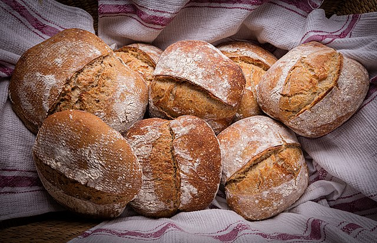

Sourdough Bread

Description
A delicious, crusty bread that can be made at home in a matter of hours.
Why spend $7 at the bakery when you can make beautiful artisan style bread in the comfort of your own home.
Ingredients
- 4 cups of all purpose flour
- 2 cups of water
- 1 tablespoon of salt
- 1 tablespoon active dry yeast
Steps
- Mix dry ingredients
- Slowly add water and mix a shaggy dough together
- Rest for 4 hours and let it rise
- Bake in the oven at 450 F for 50 minutes